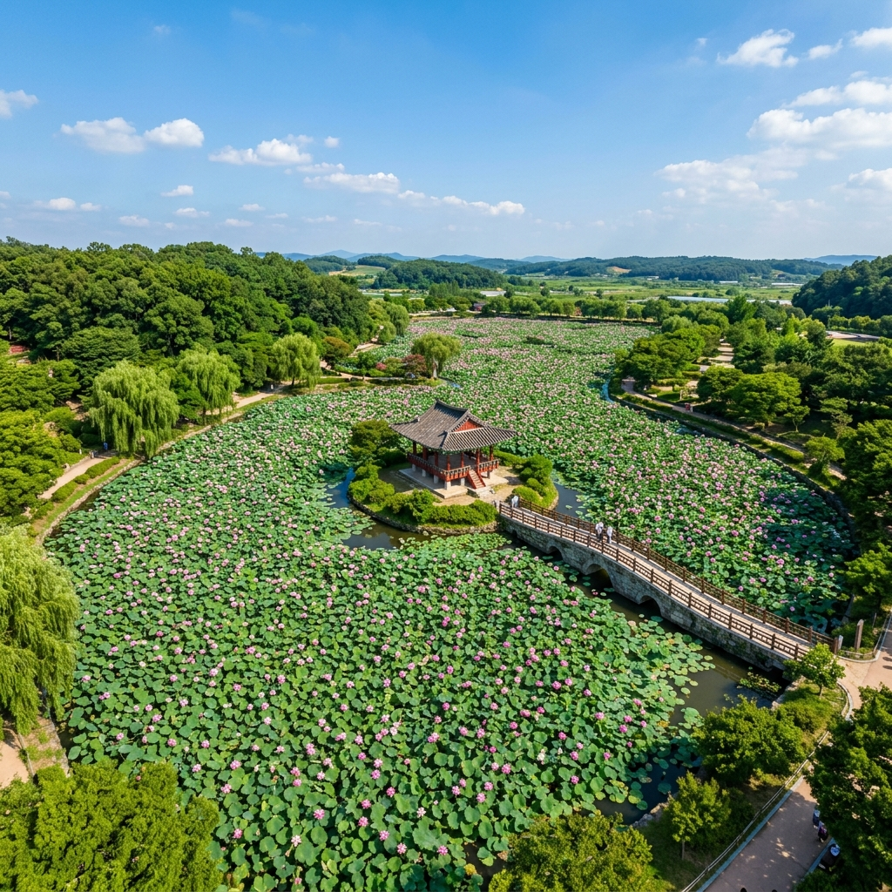
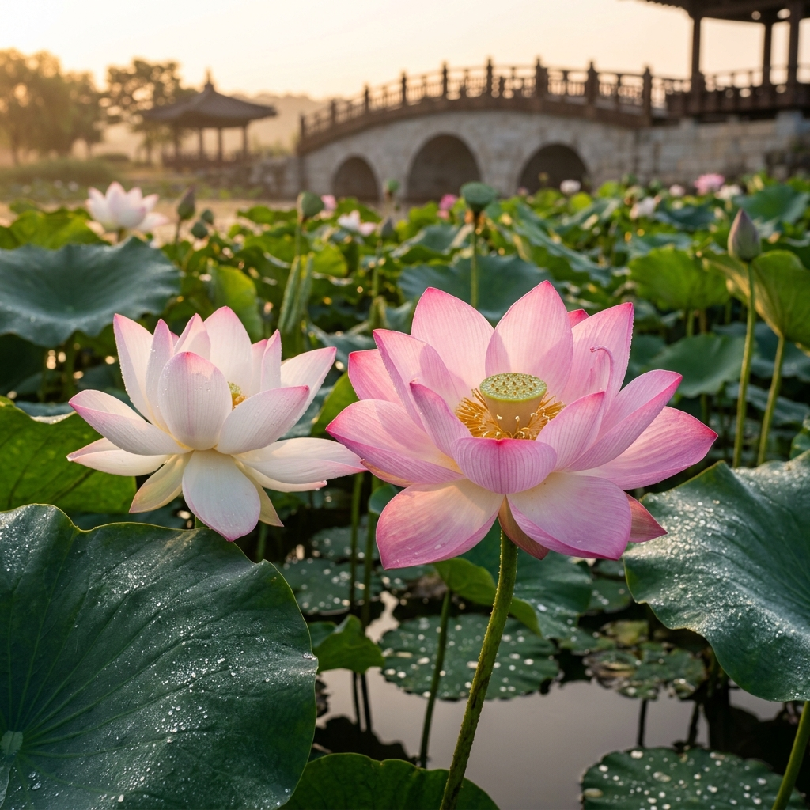
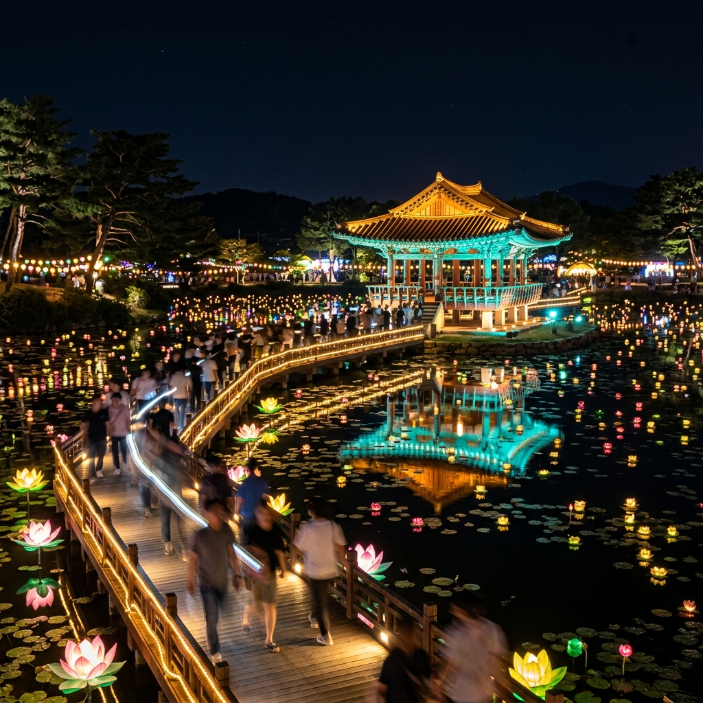

1,400년 전 백제 무왕이 만들었다는 연못에 한여름 연꽃이 피어나면, 부여는 전혀 다른 얼굴로 여행자를 맞이합니다.
부여 궁남지는 우리나라에서 가장 오래된 인공 정원 연못으로, 매년 7월 수만 송이 연꽃이 1만 평 수면을 가득 채우는 장관을 연출합니다.
2026년 부여서동연꽃축제는 7월 3일(금)부터 7월 5일(일)까지 열리며, 입장료는 없습니다.
축제 기간 야간 조명이 포룡정과 연꽃 위를 물들이는 야경은 낮 풍경과는 전혀 다른 감동을 선사합니다.
연꽃 감상에 정림사지와 국립부여박물관을 더하면 부여의 역사와 자연을 하루에 모두 품는 알찬 코스가 완성됩니다.

서동연꽃축제의 진가는 해가 지고 나서 드러납니다.
포룡정과 연못 둘레에 조명이 하나씩 켜지면, 수면에 빛이 반사되어 낮에 보이던 연꽃이 완전히 다른 아름다움으로 변합니다.
따뜻한 황금빛과 은은한 청록 조명이 섞이며 연못 전체가 빛의 정원으로 바뀌는 그 장면은, 한여름 밤의 특별한 선물 같습니다.
야간 기온이 낮아져 한낮보다 훨씬 쾌적하게 산책할 수 있으며, 해 질 무렵 황혼 시간대에 촬영하면 하늘과 연꽃과 조명이 모두 한 프레임 안에 담깁니다.
야간 조명 운영 시간은 축제 공식 홈페이지 공지로 확인하시기 바랍니다.
궁남지는 삼국사기에 "무왕 35년, 궁의 남쪽에 연못을 팠다"고 기록된 우리나라 최초의 인공 정원 연못입니다.
서동과 신라 선화공주의 사랑 설화가 탄생한 배경이기도 한 이곳은, 역사적 의미와 자연 감상이 함께 어우러지는 곳입니다.
현재의 모습은 1960년대 발굴과 복원을 거친 것으로, 원래 궁남지의 규모는 지금보다 훨씬 방대했을 것으로 학자들은 추정합니다.
사적 제135호로 지정된 궁남지는 충청남도 부여군 부여읍 동남리에 위치하며, 국립부여박물관·정림사지와 함께 백제 사비 시기의 핵심 유적지를 형성합니다.
연못 중심 섬에 세워진 포룡정은 전통 한국 정자의 아름다움을 보여 주며, 이곳으로 이어지는 석교 위에 서면 사방이 연꽃으로 둘러싸인 장면이 펼쳐집니다.
2026년 부여서동연꽃축제는 7월 3일(금)~7월 5일(일)까지 궁남지 일원(충남 부여군 서동공원)에서 진행됩니다.
입장료는 무료이며, 사전 예약 없이 현장 방문만으로 참여할 수 있습니다.
3일간의 축제 기간 중에는 연꽃 감상 외에 문화 공연, 체험 프로그램, 먹거리 부스, 야간 경관 조명이 함께 운영될 예정입니다.
세부 프로그램 내용은 축제 전 부여군 공식 홈페이지 또는 서동연꽃축제 공식 SNS에서 발표되는 최신 공고를 확인하시기 바랍니다.
축제 기간이 아니어도 7월 중순~8월 초까지 연꽃이 절정을 이루므로, 일정이 맞지 않는다면 그 시기에 방문해도 충분히 아름다운 풍경을 만나실 수 있습니다.

궁남지 연꽃의 절정기는 7월 중순에서 8월 초입니다. 축제(7월 초)는 개화가 왕성해지는 시점에 열리므로, 만개 직전의 신선한 모습을 볼 수 있는 시기입니다.
절정 방문을 원한다면 7월 15일 전후를 목표로 잡되, 그해 기온과 일조량에 따라 1~2주 오차가 생길 수 있습니다.
연꽃은 아침에 피고 오후에 오므라드는 습성이 있어, 꽃잎이 활짝 열린 모습을 보고 싶다면 오전 7시~10시 방문이 최적입니다.
방문 전 부여군청 홈페이지나 SNS, 최근 방문자들의 블로그 후기로 개화 상황을 미리 체크하면 헛걸음을 막을 수 있습니다.
분홍 연꽃보다 흰 연꽃이 약간 늦게 피는 경향이 있어 두 종류를 동시에 보려면 7월 중순이 가장 적합한 시기입니다.
궁남지에서 인상적인 사진을 남기고 싶다면 다음 세 곳을 주목하세요.
포룡정과 섬: 섬 위 정자를 연꽃이 에워싼 구도는 궁남지의 가장 상징적인 사진입니다. 오전 순광이 정자 앞면을 비추는 시간대가 가장 좋습니다.
석교 위 앵글: 섬으로 이어지는 돌다리 위에 서서 아래를 내려다보면 연꽃이 가득 찬 수면이 사진 프레임을 채웁니다.
연못 외곽 산책로: 여러 각도에서 연꽃 군락을 담을 수 있으며, 이른 아침 안개가 깔릴 때는 특히 신비로운 분위기가 연출됩니다.
야간에는 수면에 반사된 조명을 이용해 스마트폰 야간 모드로 촬영하면 매우 인상적인 결과물을 얻을 수 있습니다.
부여는 작은 도시이지만 도보권 안에 백제 유산이 촘촘하게 분포해 있어 하루 안에 여러 곳을 둘러볼 수 있습니다.
정림사지 5층석탑(국보 제9호): 궁남지에서 걸어갈 수 있는 거리에 있으며, 백제 석탑 중 가장 완전한 형태로 현존하는 귀중한 유산입니다. 고즈넉한 야외 유적지 분위기가 연꽃 감상 후 여운을 이어 줍니다.
국립부여박물관: 국보 제287호 금동대향로를 비롯한 백제의 정수를 한 공간에서 만날 수 있습니다. 야외 전시와 실내 전시를 함께 즐길 수 있어 가족 방문에도 적합합니다.
백제문화단지: 사비 왕궁과 능사를 재현한 대형 테마파크로, 차로 약 10분 거리입니다. 백제 문화를 체험하며 역사 기행의 마무리로 좋습니다.
부여는 유네스코 세계유산에 등재된 백제 역사 유적지구 거점 도시이므로, 단순한 연꽃 여행을 넘어 역사 문화 기행으로도 손색이 없습니다.

내비게이션에 "궁남지"를 검색하면 충남 부여군 부여읍 동남리로 안내됩니다.
공용 주차장이 궁남지 인근에 마련되어 있으며, 요금은 방문 시 현장에서 확인하시기 바랍니다.
축제 기간에는 방문객이 많아 인근 주차 공간이 부족할 수 있으므로, 여유 있게 일찍 도착하거나 부여 버스터미널 쪽을 이용한 뒤 도보 이동도 고려할 수 있습니다.
수도권에서 출발하는 경우 대전·공주를 경유하는 고속버스 또는 자가용을 이용하는 방법이 일반적입니다. 공주와 함께 충남 1박 2일 코스로 묶는 여행도 인기입니다.
부여를 방문했다면 연잎밥은 꼭 맛봐야 할 대표 먹거리입니다.
연잎에 싸서 쪄낸 밥에 연꽃의 향이 은은하게 스며들어, 여름 연꽃 여행의 분위기와 절묘하게 어울립니다. 1만 원 안팎으로 즐길 수 있습니다.
부여 특산물인 밤을 활용한 과자와 밤막걸리도 현지 시장에서 맛볼 수 있으며, 충남 향토 음식인 간장게장과 새우젓이 들어간 부여식 반찬류도 현지에서만 즐길 수 있는 별미입니다.
궁남지 주변 식당들은 비교적 가격이 합리적인 편이며, 연꽃 감상 후 배를 채우기에 부담 없는 식사가 가능합니다.
부여를 충분히 즐기고 싶다면 1박 2일 일정을 권장합니다.
1일차: 궁남지 오전 연꽃 산책 → 정림사지 → 국립부여박물관 → 서동연꽃축제 야간 경관.
2일차: 부소산성 → 낙화암 → 고란사 → 백제문화단지.
부소산성은 백제 멸망의 역사가 깃든 곳으로 낙화암에서 내려다보는 백마강 전망이 장엄합니다. 고란사는 절벽 아래 자리한 작은 사찰로 백마강과 어우러진 풍경이 압권입니다.
가족 여행이라면 백제문화단지에서 아이들이 직접 백제 복장을 착용하고 체험할 수 있는 프로그램도 활용해 보시기 바랍니다.
마지막으로 방문 전 확인해야 할 사항들을 정리합니다.
① 축제 일정: 2026 서동연꽃축제 7/3~7/5. 세부 프로그램은 공식 홈페이지 확인.
② 연꽃 절정: 7월 중순~8월 초. 축제 이후 방문도 아름다운 연꽃 감상 가능.
③ 사진 최적 시간: 오전 6~10시(낮 연꽃), 저녁(야간 조명).
④ 주차: 인근 공용 주차장 이용. 축제 기간은 이른 도착 권장.
⑤ 연계 코스: 정림사지·국립부여박물관·백제문화단지와 묶어 하루 또는 1박 2일 여행.